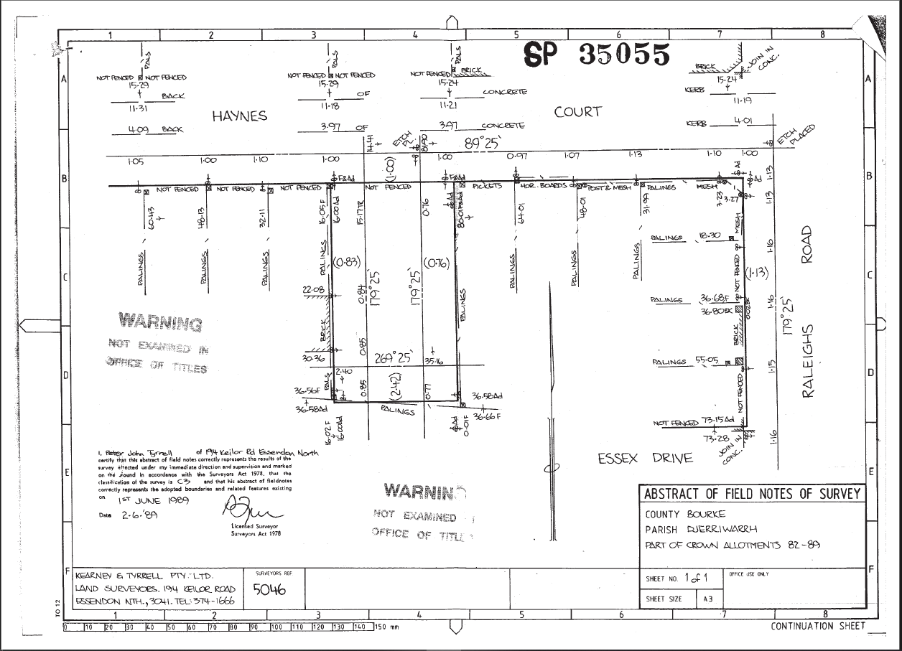
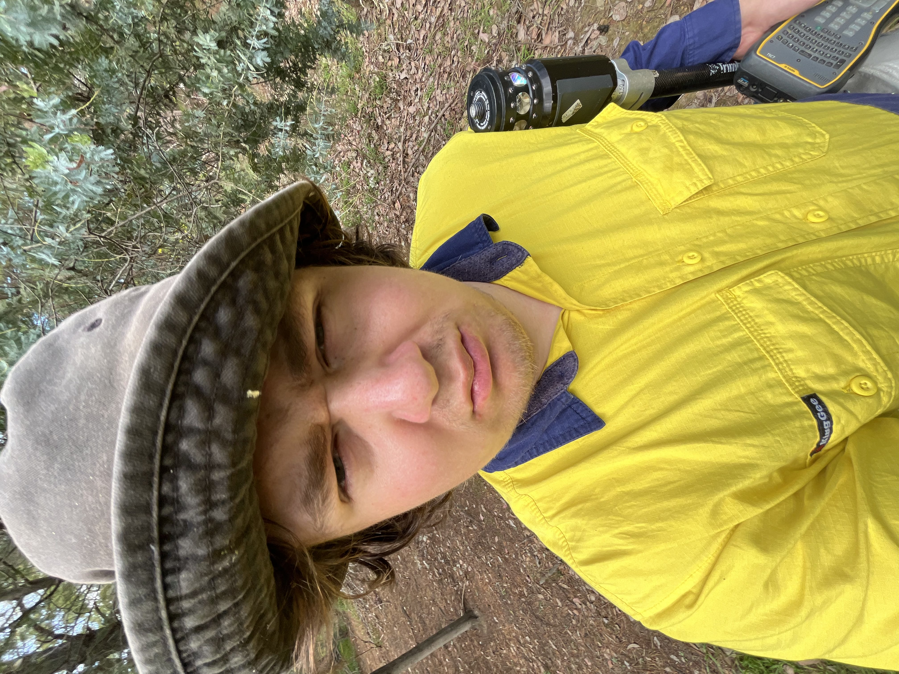
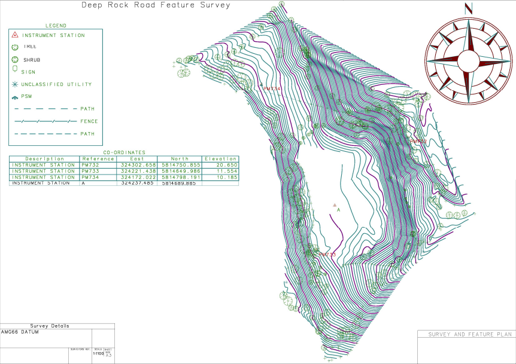
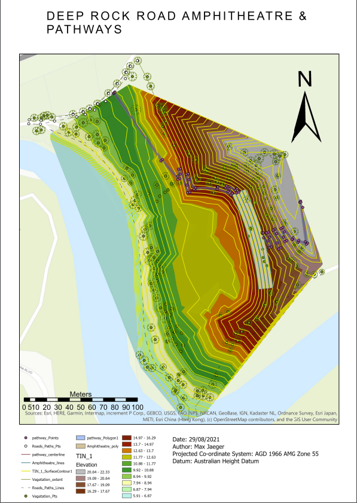
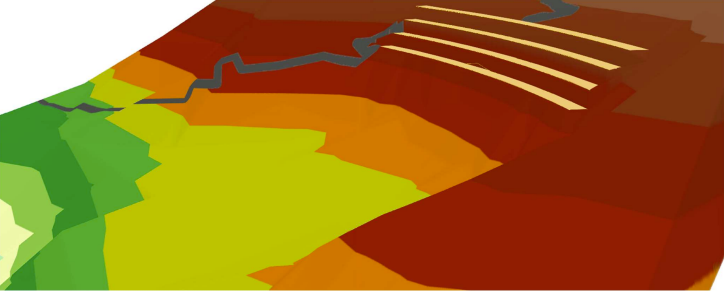
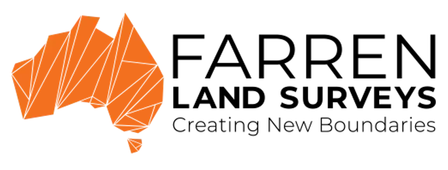
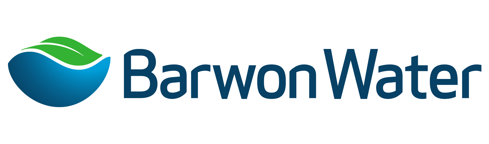

Geoportfolio
Max Jaeger
About
This website is the geoportfolio of MAX JAEGER. The website entails
information that is academically and profesionally related to the field of geospatial science
I was born on the 8th of July, 2002 and raised in the Western Suburbs of Melbourne. I am currently in my fourth year of study, pursuing a Bachelor of Applied Science (Surveying) (Honours). My surveying related interest is working with GNSS equipment, cadastral surveying, and hydrographic surveying.
My current surveying projects involve hydrographic analysis of the riverbed in Pykes Creek Reservoir.
My own personal hobbies include race cars, freestyle Motocross, Motocross, camping, listening to music, game hunting, paintball, freestyle BMX.

Academic Portfolio Overview
Cadastral Surveying Practice (GEOM2101)
on topic
Cadastral Surveying is the practice of establishing and re-establishing property boundaries. It is imperative that the new generation of cadastral surveyors are correctly informed of standard practices and procedures when conducting these activities as to maintain the integrity of the Victorian Cadastre.
Throughout my study of the GEOM2101 course, there were a number of projects which stand out in displaying the importance of the practices and procedures required from a cadastral surveyor:
- Assessment 2b: Urban Cadastral Re-establishment, A worksheet and Abstract of Field Record
- Assessment 3: Plan of Subdivision, A plan of subdivision for a proposed development
Below are some of the submission elements I have created as part of my course:
Note: If map display is too small, right-click the image and 'Open in new tab' to allow zooming of the map.
Absract of Field Records Sheet 1

Absract of Field Records Sheet 2

Worksheet

Applied Geospatial Techniques (GEOM2083)
Applied Geospatial Techniques (AGT) is a very practical course as it utilises skills from disciplines that typically interact within the geospatial industry, these disciplines include:
- Surveying
- Geographical Information Systems (GIS)
- Cartography
For the 2021 version of the course which I completed, the assignment was about the proposal of a new amphitheatre within the Deep Rock Oval located at Yarra Bend Park.
The main deliverables of the subject consisted of producing:
- Topographic survey map of Deep Rock Oval
- 3D generated scene of the proposed amphitheatre
- Amphitheatre and Pathway plan of the proposed site
- Final map of the amphitheatre proposal
The topographic survey map was created using surveying data obtained on the field using a total station at Yarra Bend Park.
The topographic map was made using LISCAD.SEE and LISCAD.CAD. The 3D generated scene was created using the ArcGIS suite program ArcScene while the raw data was
modified in ArcGIS Pro. The proposed pathway was created using ArcMap by using the GIS program to generate the pathway based on slope angle and the amphitheatre
based on z-values. The final map used Adobe Illustrator to create the map along with ArcMap for exporting the 2D amphitheathre image and ArcScene for
exporting the image of the 3D scene.
Note: If map display is too small, right-click the image and 'Open in new tab' to allow zooming of the map.
Topographic survey map (Surveying component)

3D Amphitheatre and pathway plan (GIS component)


Final map of proposal(Cartography component)

Industry Experience
This page will briefly cover all my work experience (as of September 2024) within the surveying industry. The two main companies that I have worked at
were Barwon Water and Farren Land Surveys. This page will outline my experience gained and skills I have learned from working at Barwon Water and Farren Land Surveys along with an
overview of my current surveying skillset.
Farren Land Surveys

Assistant Surveyor
February 2024 - Present
My time at Farren Land Surveys had me involved in a number of different surveying activities such as construction set out, as-constructed surveys, feature surveys,
re-establishment survey. I was also familiarised with using the Trimble S-series total stations, R10 GNSS antenna and the TSC7 and TSC3 series controllers. I was also exposed
to using TOPCON MAGNET Office in order to perform computations for re-establishments as well as establishing jobs onto the Map Grid of Australia (MGA2020) as well as the
Australian Height Datum (AHD).
Furthermore, my time at Farren Land Surveys has taught me the importance of professional practice within the workplace. During my employment, I have realised the importance
of how you present yourself in the office in front of collegues as well as clients and how that is used to convey the professionalism established within the business.
Barwon Water

Assistant Surveyor
October 2022 - February 2024
My work at Barwon Water involved conducting surveys in order to upkeep Barwon Water's network of underground assets as well as upkeep on many of the dam/reservoirs that were in the jurisdiction of Barwon Water.
Some of the survey related tasks that I was involved in include:
- Feature surveys for the construction of newly proposed pipelines
- Working with cable location services in order to ensure the safety of the construction team on given work sites
- Monitoring surveys of dams/reservoirs to ensure movement within the dam walls are within safe thresholds
- As-constructed surveys on newly built assets to ensure that assets are located as proposed in the design
- GNSS subsidence monitoring of the Anglesea and Gerangamete region to establish whether drawing water from underground aquifers is not causing subsidence within those regions
- Differential levelling in order to put the survey control network of a given job onto the Australian Height Datum (AHD)
During my work at Barwon water I was able to familiarise myself with Leica Instruments (MS60) as well as their GNSS antennas (GS18) using Leica Captivwate on a CS18 controller.
I have also had exposure to 12d field as wel as using the 12d software to process survey data in order to send off to the GIS department.
Skills and Proficiencies
 |
Terrestrial Surveying |
 |
QGIS |
 |
Cartographic Principles |
 |
Adobe Illustrator |
 |
Remote Sensing |
 |
Photogrammetry and Drone Mapping |
 |
Web Design: HTML & CSS |
 |
Web GIS |
 |
Python Programming |
 |
SQL Database Management |
Credits and Attributions
The following programming languages and software were used to create the website
- HTML
- CSS
- JavaScript
- Visual Studio Basic
The deliverables contains content from the following subjects:
- Cadastral Surveying Practice (GEOM2101)
- Applied Geospatial Techniques (GEOM2083)
Special thanks to the following people who have helped me make this website with their expertise and guidance:
As per the policy of using the Flaticons with a free account, the attributions and crediting of the creators of the icons are as below:
Attributions of icons used: